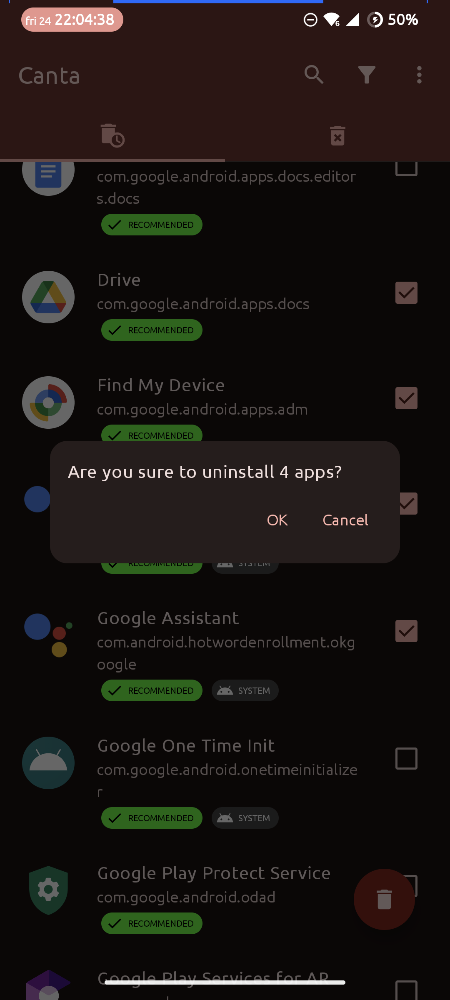
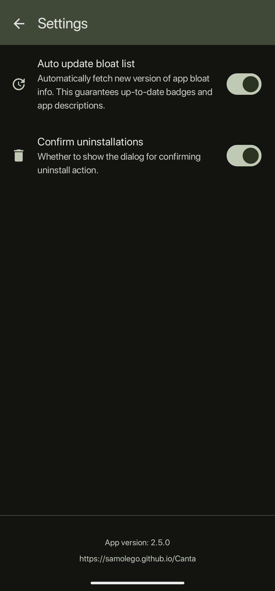

Canta 避坑指南：看着简单的应用卸载工具，我踩过这几个坑
Canta 是很多人清理安卓预装的首选，但我实际用下来发现几个容易翻车的点——关掉确认框误删、恢复失败、Preset跨设备漏匹配、Shizuku掉线、自定义清单改坏。这篇把每个坑的症状和解法说清楚。
前言：第一次用就觉得"这也太爽了"，直到那天手滑
我第一次从官方下载装完 Canta 的反应跟大多数人一样——界面干净，长按多选，一键卸预装，比 adb 命令行快多了。
后来才发现，爽的背后藏着几个默认配置的"陷阱"。不是 Canta 设计有问题，而是它把权力交给你了，你得对自己点下去的每一下负责。下面这几个坑我一个都没躲过，逐个说。
坑一：关掉卸载确认框后，手抖卸了不该卸的
症状：那天我急着清一批应用，嫌每次弹确认框多一次点击，进设置把 Confirm Before Uninstall 关了。然后多选的时候手指滑了一下，多勾了三个系统应用，点回收站直接走了，连个提示都没有。
原因：Canta 默认开着的那个确认框，就是唯一的安全门。关掉之后，回收站按钮就是"执行"，没有中间态。你以为"我都勾对了"，但玻璃屏上手指多滑一毫米就是多勾一项。
解法：这事儿之后我再也没关过。确认框显示应用数量和总大小，看一眼就是一秒的事。如果真要批量跑自动化，用完立刻开回来——别跟自己赌手稳不稳。

确认框不是唯一的保护，Canta 有四层：紫色徽章不让选、黄色徽章给警告、确认对话框、已卸载标签页能恢复。但你关了确认框，中间两层就成了摆设，直接从"小心选"跳到"卸了不可撤销"。
坑二：已卸载标签页里找不到恢复按钮，或者恢复失败
症状：某次卸完之后后悔了，切到已卸载标签页，却发现恢复按钮灰的，或者点了之后报 Shizuku 权限错误。还有一次直接提示"找不到包"。
原因：三种情况。第一种是 Shizuku 进程挂了——Canta 卸载和恢复都靠 Shizuku 作为中间代理，它掉线了，所有请求发不出去。第二种是 APK 真被删了——正常 Canta 只删 user 0 记录，APK 留在系统分区，但如果你 root 过手动删过系统文件，那 Canta 也救不了。第三种是特殊类型应用——overlay 悬浮窗、device admin 设备管理员这类，pm install-existing 命令不认，得 adb 手动来。
解法：先重启 Shizuku（下拉通知栏点启动），再试恢复。不行就 adb shell pm install-existing <包名> 手动执行。如果连 adb 都报找不到包，那只能重新装 APK 了，Canta 没魔法。
坑三：Preset 跨设备同步，到新机器跳过了一堆包
症状：旧手机上我用Canta官网介绍的方法卸得干干净净，导出了 Preset JSON。换了新同品牌手机，Apply Preset 之后发现只选中了三分之一——剩下那些预装应用，Preset 里有包名，但新机器上 Canta 没匹配到。
原因：同一厂商不同型号、不同系统版本的预装清单不完全一样。你在旧手机上验证过的包名，新机器上可能压根不存在，或者改了。Canta 的设计就是自动过滤设备上不存在的包，所以它默默跳过了，不会报错也不会提醒你"你有 X 个包在这台机器上不存在"。
解法：Apply Preset 完成后，手动搜几个旧设备上卸过的包名，看看新机器上还有没有。有的话加进 Preset。没有也不用纠结——说明这个型号本身没预装，你想卸也没得卸。我后来把新旧两个 Preset 合并了一下，存了个更大的版本，每换一次机就更全一点。
坑四：改了 Bloat List URL，应用列表全没徽章
症状：我有一次想试试社区某个镜像源，在高级设置里把 Bloat List URL 换成了 jsDelivr 的地址，结果刷新之后应用列表上的 Safe/Advanced/Unsafe 徽章全没了，只剩纯图标加名字。
原因：Canta 从那个 URL 拉 JSON 清单。如果 URL 格式不对、路径不包含厂商的正确文件名，或者镜像源拉到的文件本身格式有问题，Canta 解析失败就会静默降级——不报错，就是不给徽章。普通用户其实根本感知不到拉取失败了，只会觉得"今天清单没更新"。
解法：进设置把 URL 恢复默认（一般有 Reset 按钮），手动触发一次更新就回来了。具体格式和配置细节在canta文档里能找到。这两个设置项是给开发者和组织用的，普通用户别碰——默认源是社区维护的 Universal Debloater Alliance 仓库，最全最及时。我那次纯属手贱。

坑五：恢复出厂之后忘了重新 Apply Preset，以为白卸了
症状：恢复出厂设置，开机一看，之前卸得干干净净的预装应用全回来了——当时慌了，以为 Canta 的卸载没保存。
原因：Canta 的卸载本质是 pm uninstall --user 0——只从主用户槽移除记录，APK 还在系统分区。恢复出厂会清空 user 0，所有预装应用重新注册回主用户，自然都回来了。这不是 Canta 的 bug，是安卓的工作方式。
解法：恢复出厂之后重新配对 Shizuku，打开 Canta，Apply 你的 Preset，一键卸完就又干净了。我现在换机或者恢复出厂的流程已经固定成：配对 → 打开 Canta → Apply Preset → 卸完 → 完事，比自己一个个搜快太多。
防坑清单（速查）
- 卸载确认框永远别关——一秒点击换保险，手滑的代价可能是重装系统应用
- Shizuku 掉线先重启——恢复失败的 80% 原因是 Shizuku 挂了，别先怀疑 Canta
- Apply Preset 后核对一下——新机型可能有新预装，Preset 不会自动覆盖全
- 普通用户别改 Bloat List URL——默认源最靠谱，改坏了默默降级
- 恢复出厂后重新 Apply Preset——卸载不会丢，只是需要再跑一次
结语
Canta 本身是个设计很克制的工具——它给你四层保护，但你得保持这些开关开着，自己不主动关掉。上面这五个坑，前四个都是我自己作的，第五个搞明白了原理也就不算坑了。对了，Canta 的完整资料和安装包在GitHub、Gitee、GitCode三个仓库都有备份，怕主源访问不稳的朋友可以按需取用。
知道这些之后，这软件其实相当省心。